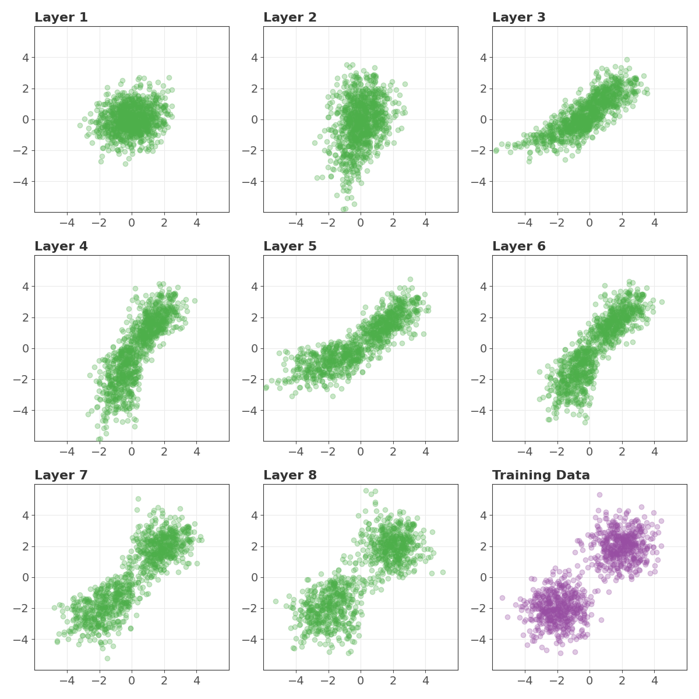

AANN 28/12/2024
Table of Contents
Real NVP: Normalizing flows

Overview
In this example we will implement the real NVP, which is a normalizing flow model. I will follow the description given in Chapter 18 of Bishop and Bishop (2024). The Bishops did a great job describing the mathematics, I want to demonstrate how it might be implemented in PyTorch.
The goal of normalizing flows is to create an invertible mapping between samples from a target distribution and a base distribution. As a bonus, we get an approximation of the target's PDF. The target distribution will typically be something expensive to sample from, and we may not be able to evaluate its density. The base distribution will be a convenient distribution, typically a multivariate normal (hence the "normalizing" part).
The real NVP (short for "real-valued non-volume-preserving") is an invertible neural network that can be used as a normalizing flow. This network is described clearly by Bishop and Bishop (2024) in \(\S\) 18.1, so I won't go into the mathematical details here, instead, I will present an implementation in PyTorch with a simple example. You can find the model implementation here, and training script here, and a snakefile which coordinates the computation here.
Normalizing flows
Consider a random variable \(X\) with an unknown target density \(p_X(x)\). Typically, \(X\) represents high-dimensional or complex data, such as the pixel values in an image, making it challenging to model or manipulate directly. Normalizing flows let us work with \(X\) indirectly, through a more convenient random variable \(Z\). The random variable \(Z\) comes from a simpler base distribution \(p_Z(z)\), e.g., a multivariate Gaussian. The goal is to construct an invertible transformation \(f\) that relates \(X\) and \(Z\) through \(X = f(Z)\). The inverse of \(f\), denoted \(g = f^{-1}\), allows us to map data from the \(X\)-space back to the \(Z\)-space.
The function \(g\) lets us calculate the density \(p_X(x)\) in terms of the \(p_Z(z)\) via the change of variables formula:
\[ p_X(x) = p_Z(g(x)) \left|\det \mathbf{J}(x)\right|, \]
where \(\mathbf{J}(x)\) is the Jacobian of the inverse transformation \(g\). In the Jacobian, the entry \((i, j)\) represents the partial derivative \(\frac{\partial g_i(x)}{\partial x_j}\). Having \(f\) and \(g\) lets us do two important things: sample from \(p_X(x)\), by sampling from \(p_Z(z)\) and applying the transformation \(f\); and evaluate \(p_X(x)\) using the formula above.
Normalizing flows approximate \(f\) with a neural network. The network architecture must be designed so that \(f\) is invertible, the Jacobian is computationally efficient, and the \(g\) is easy to compute. Real NVP (Real-valued Non-Volume Preserving) networks are an example of such an architecture.
Network implementation
I implemented the real NVP in the class RealNVP. This extends the
PyTorch Module class and adds methods for running the network in
reverse, reverse, and computing the base density and determinant of
the Jacobian. These methods are helpful when training and using the
network.
class RealNVP(nn.Module): def __init__(self, dim_a, dim_b, num_flows): super(RealNVP, self).__init__() assert (num_flows > 0) and ( num_flows % 2 == 0 ), "num_flows must be a positive even integer" self.dim_a = dim_a self.dim_b = dim_b self.num_flows = num_flows self.flows = nn.ModuleList([RealNVPLayer(dim_a, dim_b) for _ in range(num_flows)]) def forward(self, x): for f in self.flows: x = f(x) x = torch.cat([x[:, self.dim_a :], x[:, : self.dim_a]], dim=1) return x def ln_base_pdf(self, z): return -0.5 * torch.sum(z**2, dim=1) def ln_det_jacobian(self, x): ldjs = torch.zeros(x.size(0)) for f in self.flows: ldjs += f.ln_det_jacobian(x) x = f(x) x = torch.cat([x[:, self.dim_a :], x[:, : self.dim_a]], dim=1) return ldjs def reverse(self, z): for f in reversed(self.flows): z = torch.cat([z[:, self.dim_a :], z[:, : self.dim_a]], dim=1) z = f.reverse(z) return z def reverse_with_intermediates(self, z): intermediates = [] for f in reversed(self.flows): z = torch.cat([z[:, self.dim_a :], z[:, : self.dim_a]], dim=1) z = f.reverse(z) intermediates.append(z.detach().numpy()) return intermediates
Instances of RealNVP use a list of RealNVPLayer objects to
implement the actual transformation of the data. The determinant of
the Jacobian is computed at the layer level and aggregated by
RealNVP.
class RealNVPLayer(nn.Module): def __init__(self, dim_a, dim_b): super(RealNVPLayer, self).__init__() self.dim_a = dim_a self.dim_b = dim_b self.s_nn = nn.Sequential( nn.Linear(dim_a, 64), nn.LeakyReLU(), nn.Linear(64, dim_b), nn.LeakyReLU() ) self.b_bb = nn.Sequential( nn.Linear(dim_a, 64), nn.LeakyReLU(), nn.Linear(64, dim_b), nn.LeakyReLU() ) def forward(self, x): x_a = x[:, : self.dim_a] x_b = x[:, self.dim_a :] z_a = x_a z_b = torch.exp(-self.s_nn(z_a)) * (x_b - self.b_bb(z_a)) z = torch.cat([z_a, z_b], dim=1) return z def ln_det_jacobian(self, x): x_a = x[:, : self.dim_a] s = self.s_nn(x_a) return torch.sum(-s, dim=1) def reverse(self, z): z_a = z[:, : self.dim_a] z_b = z[:, self.dim_a :] x_a = z_a x_b = torch.exp(self.s_nn(z_a)) * z_b + self.b_bb(z_a) x = torch.cat([x_a, x_b], dim=1) return x
Training
Training minimises the negative log-likelihood of the training data. The loss function is described by the following class:
class NegLogLikelihoodLoss(nn.Module): def __init__(self): super(NegLogLikelihoodLoss, self).__init__() def forward(self, x, flow): z = flow(x) ln_base_pdf = flow.ln_base_pdf(z) ln_det_jacobian = flow.ln_det_jacobian(x) return -torch.mean(ln_base_pdf + ln_det_jacobian)
Example
In the example, I used a standard normal distribution as the base distribution and a (uniform) mixture of two normal distributions as the target. The components of the target distribution where bivariate normal distributions with mean vectors \((-2, -2)\) and \((2, 2)\) and the identity as a covariance matrix. I trained the real NVP network with 16 layers (8 pairs with the variables flipped each time).
To train this network I used Adam with default settings, a learning rate of \(2\times 10^{-4}\) and mini-batches of size 64 for 1,000 epochs. The training data consisted of 1,000 samples from the target distribution.
Figure 1 shows the transformation that a sample from the base distribution undergoes when passing through the trained network. The plots show the distribution of some test data as it passes through each of the pairs of layers of the network. The final plot shows the training data in red. We can see that by the end of the network the samples have a similar distribution to the training data.

Discussion
I've wanted to do a post on normalizing flows for a long time; the ability to easily map between distributions seems too good to be true. The implementation of this network is a little bit more mathematically involved than what has been seen in previous posts, but I was satisfied with how it came together in the end. I couldn't see a particularly nice way to assess the trained model, but there are a few packages for normalizing flows, so maybe there are some nice ideas in there that I could use.
In a follow up post, I want to extend this to get something along the lines of BayesFlow 1, 2. Maybe the availability of training data will be a problem for real problems. I'm mainly interested in the application to amortized inference though, and in that case some sort of emulation might help.
Thanks
Thanks to Jackson Kwok, and Liam Hodgkinson for helpful comments on a draft of this post.